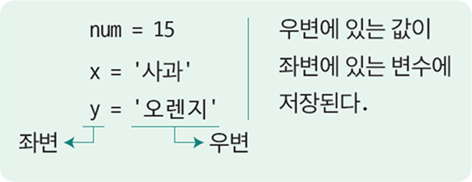

개념 학습
변수
변수는 어떤 값을 저장하고 나중에 참조하기 위한 기억 장소로, 데이터를 수정하거나 검색, 조작하는 데 필수적이다.
변수를 사용하기 위해서는 기억 장소에 연결된 변수명을 붙여 주고 대입 연산자(=)를 사용해서 값을 저장한다.
변수와 기억 장소

| 변수명 | 기억 장소 (컴퓨터 메모리) |
| ... | |
| num | 15 |
|---|---|
| x | 사과 |
| y | 오렌지 |
| ... |
변수를 위한 기억 장소가 컴퓨터 메모리에
마련되고, 기억 장소에 변수명이 연결된다.
그리고 기억 장소 내에 데이터가 저장된다.